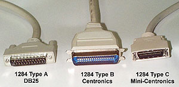

The 1284 committee felt that it was paramount to define what these properties should be in order to meet the following objectives:
To meet these objectives, the standard defines the connectors, electrical interface, and cable requirements.
The standard identifies three types of connectors for a 1284 interface.
Figure 1 shows what these connectors look like.

The
type C connector is the one recommended for new designs. This connector
offers a smaller footprint than the previous connectors, has a simple-to-use
clip latch for cable retention, and provides for the easiest cable
assembly with the optimal electrical properties. In addition, a
cable assembly built with this connector provides for two more signals.
These signals are Peripheral Logic High and Host Logic High. These
signals may be used to determine if the device at the other end
of the cable is powered on. This enables some degree of intelligent
power management for 1284 interfaces.